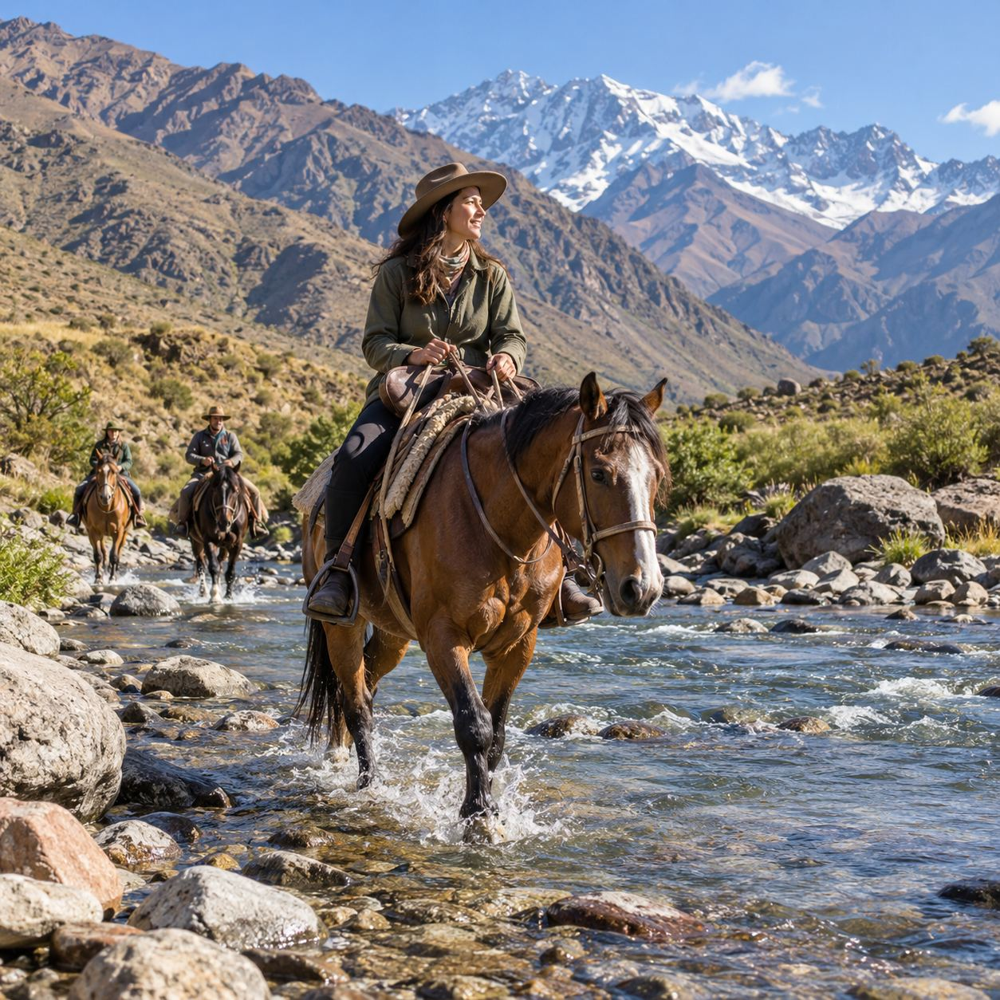
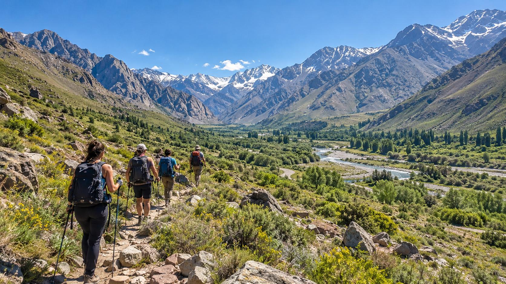
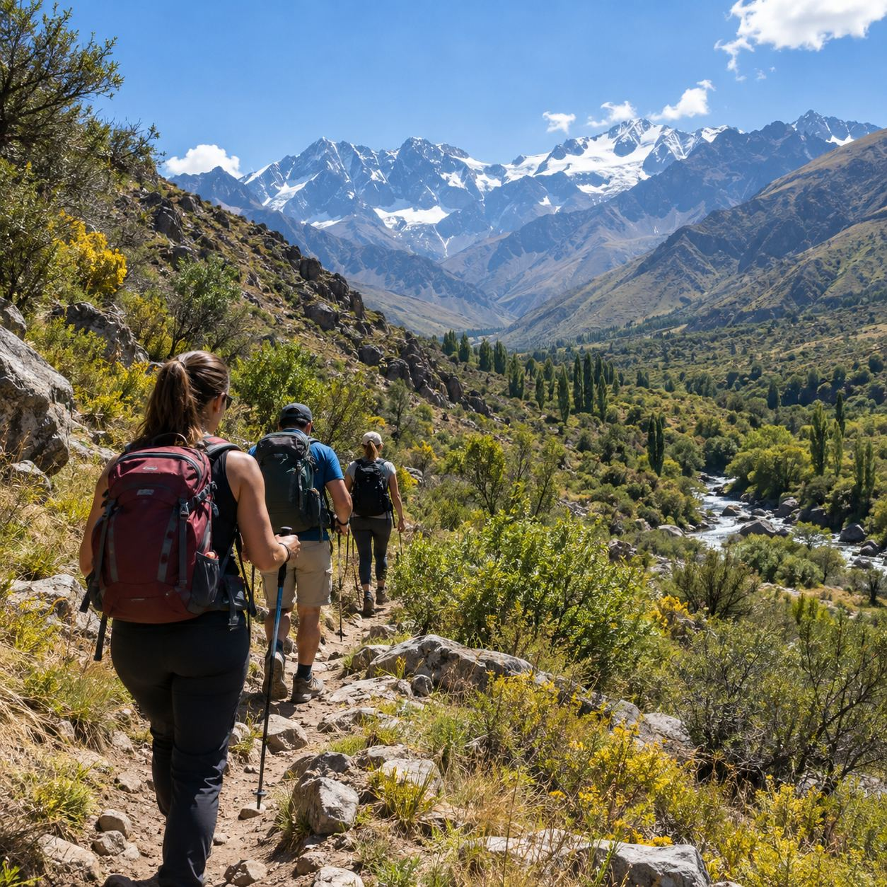
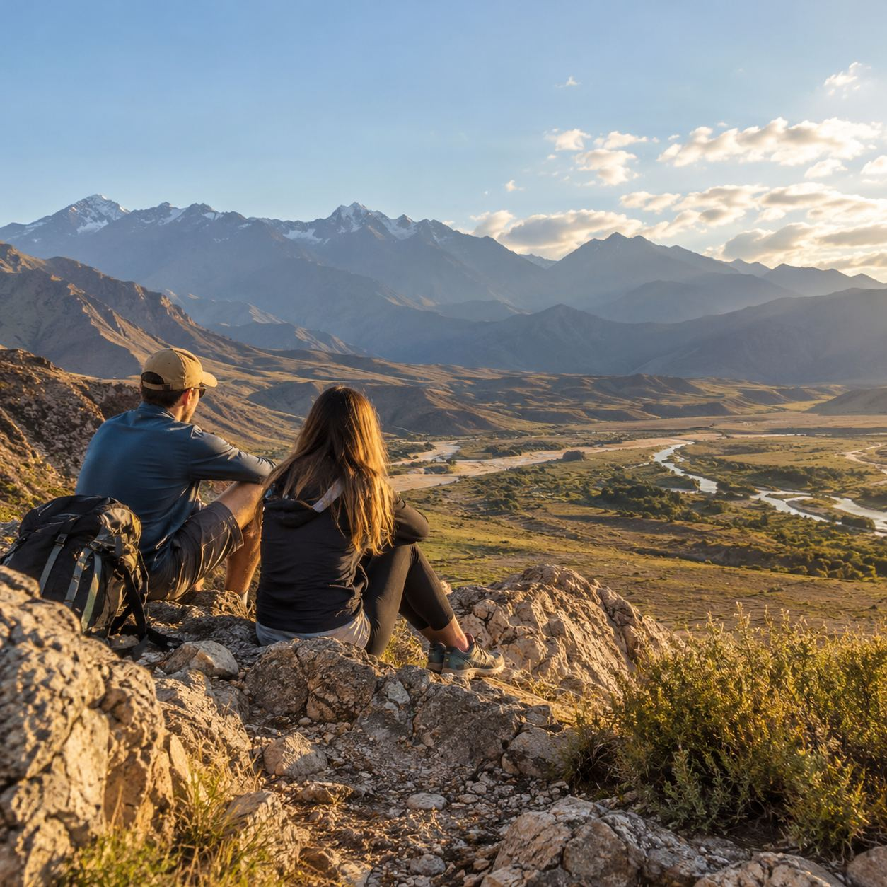
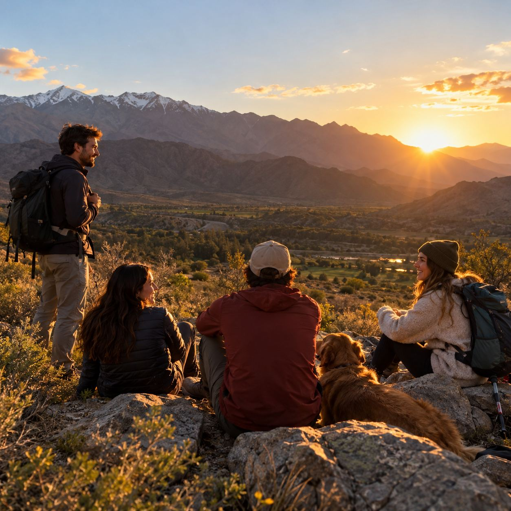

01 / A CABALLO
Cabalgatas
Un recorrido a otro ritmo, entre senderos y vistas de montaña.
Consultar cabalgataMANZANO HISTÓRICO · TUNUYÁN · MENDOZA
Senderos del Valle
Salí al encuentro de la montaña. Elegí cómo querés recorrerla y coordiná tu experiencia directamente por WhatsApp.

ELEGÍ TU RECORRIDO
Dos maneras de descubrir el paisaje del Manzano Histórico.

Un recorrido a otro ritmo, entre senderos y vistas de montaña.
Consultar cabalgata
GALERÍA


La montaña es el punto de partida de cada experiencia. Escribinos para confirmar el recorrido, la disponibilidad y el punto de encuentro.
Ver la zona en el mapaTU EXPERIENCIA CUENTA
Este espacio está pensado para quienes ya compartieron una salida con Senderos del Valle. Tu opinión puede ayudar a otros viajeros a elegir.
ANTES DE SALIR
Consultas, fechas y reservas se coordinan directamente por WhatsApp.
Contanos si te interesa una cabalgata o una salida de trekking.
Coordinamos fecha, detalles del recorrido y punto de encuentro.
Te confirmamos los medios de pago disponibles antes de reservar.
PREGUNTAS FRECUENTES
Escribinos por WhatsApp para consultar la experiencia, la fecha y la disponibilidad.
En el Manzano Histórico, Tunuyán, Mendoza. El punto de encuentro se confirma al coordinar.
Consultá por WhatsApp las formas de pago disponibles antes de reservar.
MANZANO HISTÓRICO · TUNUYÁN